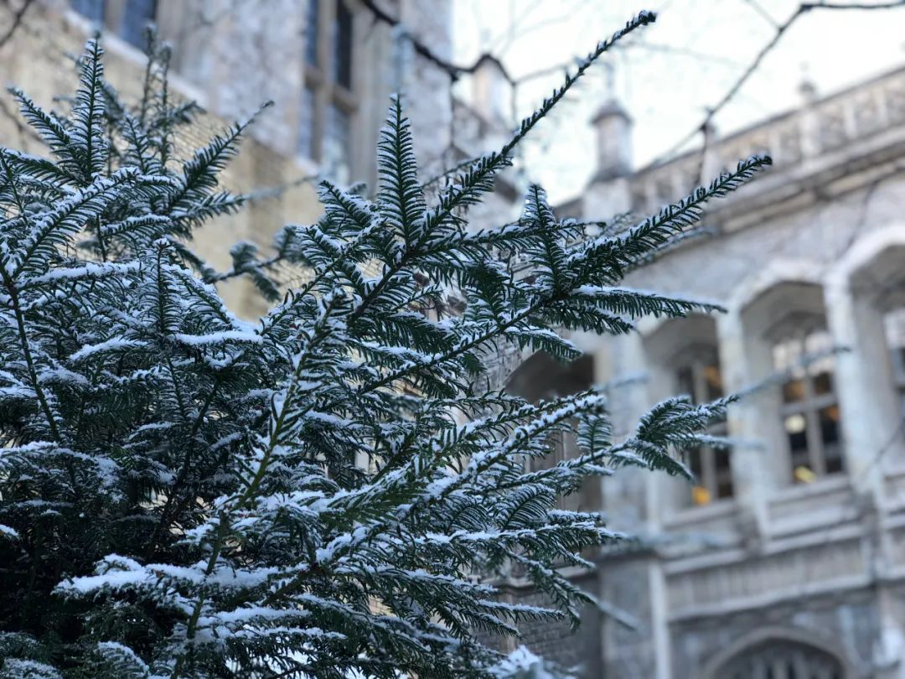

英国“隔离”日记 || 3月13日~17日：私人化的记录与感激
原文链接 备份链接 今天是3月18日，月相为29%的残月。 It is March 18 with a 29 percent of Waning Crescent. 距离新月还有 6 天。 There are 6 days until …

今天是3月20日，月相为10%的残月。
It is March 20 with a 10 percent of Waning Crescent.
距离新月还有 4 天。
There are 4 days until New Moon.
文 || 白清扬
嗯……新裤子的新歌。
_还是熟悉的朋克，还是熟悉的彭磊……
_
_只不过，“毁”了一首经典。
_
真的好听！强烈推荐！
《梦醒时分》，新裤子乐队。
一
事出突然，原定四月十一日的归途，提前到了明天。我现在坐在电脑前，带着震惊留下的余韵，试图整理好心情。
早上九点醒来，关掉飞行模式，被母亲的消息轰炸淹没。打开一看，母亲已经帮我改好了机票。

△ 学校发来邮件，“赶”大家回家。这是对的。
想来封城确实令人焦虑，而学校也不断催促我们这些海外留学生尽早回家。学校发来的邮件中已经表明了态度。在昨天收到的邮件中，校长说：“这是自第二次世界大战结束以来，我们经历过最艰难的一段时间。”我不禁感叹，英国人民这是已经过了多少年太平日子了呀——不说“生于忧患死于安乐”，但至少从我自己的观察来看，英国人民已经失去了居安思危的能力。巨大的危险即将来临，大家一开始先是不屑，继而是盲目自信。等到危险真的行将笼罩不列颠时，大家的恐慌与焦虑却已经太晚了。

△ “二战以后最艰难的时刻”。
二
无巧不巧，两周以前母亲自国内寄来的口罩正好卡在今天寄到我家。从前台拿回屋里，特意前来与我道别的朋友对我说：“正好明天就派上用场。”确实。
回国。虽然我心心念念回国，正如昨天文章中所说，但猝不及防告诉我，明天就要离开，而下一次回来时，应该就是九月下旬了——这无论如何都需要平静一下。想来还有太多的事情没有做，也有很多遗憾。匆匆离开，来不及向我在这所学校度过的四年体面告别。来不及再看一看老旧的主楼，那里在两百年前曾是教堂。我对它并没有太多眷恋，但我的仪式感实在很强。即使并无深情，想起四年时光，在这里多少也经历了一些故事，有开心，有幸福；有恋爱，有诀别。这一切情感都不完美的结束了，在这伦敦随着大雾陷入喑哑的星期四——等我再回来时，我应该也不在这里读书了。

△ 学校门口的crescent。半年后再见啦。
记不起来上一次去图书馆是哪一天，但这学期我确乎是去过图书馆的。一直到上学期，我还是一个图书馆狂热爱好者。“泡”图书馆，从上午一直到天色全黑，迎着图书馆门口那条坡度不小的巷子中呼呼扑来的狂风，走向地铁站。这条路我走了太多次，我原以为还会再走很多次。本科最后一个学期开始以后，我苦于实体书籍太多，无法天天搬来搬去，便天天宅在家里写论文。但我依然认为，我还会去图书馆泡一泡的。没想到是一次甚至记不起场景的道别。

△ 图书馆中一角。
对于伦敦，虽然也有不舍，但我还会回来。这一次匆匆离开，大概是为了下一次踌躇满志的回来。那就等着我吧，虽然我不会爱你——这片土地，这座罗马人建立的堡垒；但我还会依赖你，依赖你很长时间。
三
前路满是不确定因素，令人心下不安。
值机是否会顺利？检疫工作如何完成？登机时如何？这一路在飞机上会是怎样的体验呢？我要不要摘下口罩吃东西、喝口水？是不是要去厕所里换口罩啊？能不能用电脑？我想写稿子、写论文，也不知道要用湿巾擦多少遍键盘。下飞机之后又会是怎样的呢？我能去哪儿隔离？
太多问题了。忧虑肯定是没有帮助的，只是止不住的忧虑。对于我个人而言，唯一能做，也是最应该做的就是一切听安排，绝对不给任何人添乱。大概世上所有事都会船到桥头自然直，而十五天后，我的生活也会重回正轨。无论如何，北京的春天都在不远的未来等着我，我等不及去见它了。
四
《英国抗疫日记》由我开始。本来说好写到四月中旬，现在我却成了第一个“太监”的。天鹤与叶子还会继续留在伦敦。在疫情中，他们同样经历了各自的故事；欣喜与忧虑。军队已经进入伦敦，封城在即。英国的明天会如何，就由他们继续讲述吧。
五
最后，我也想说说我们做这个专题的初心。
虽然我没有看到，但许多朋友告诉我，网上对于留学生的不理解与攻击日渐增加。从个人的角度出发，我是可以理解的；更何况，还有那么多海外华人归国后爆出来的恶劣事件。但是，这种不理解与攻击却绝不应该继续生发。这种情绪同样会带给绝大多数本分留学生与海外华人以痛苦与失落，这会加剧双方的隔阂。这不是我们希望看到的。在极端时期，我们更应该站在一起，彼此理解、彼此支持。
因此，我写下了第一篇日记。我希望向读者展现最真实的海外隔离情况。我希望：国内的读者看到，可以消解误会，也顺便了解外国抗疫的实时情况；同时，同为海外留守的华人看到，可以彼此交流，互相支持。极端时代，这种交流与支持是难能可贵的。
我回国了，但我关怀天下所有华人以及天下所有人的心不会改变。回到国内，我会继续为大家更新隔离日记，也会继续“敦促”、“鞭策”纵队留守的作者们，为大家写下更多的海外日记。

往期英国日记
3月18日：风中海洋的气息，是游子之心唯一的慰藉（白清扬）
3月13日~17日：私人化的记录与感激（张天鹤）
3月17日：无论TA是真傻还是装傻，你都叫不醒TA（白清扬）
3月16日：第一节网课，老师像往常一样来到教室（白清扬）
3月15日：我向外卖包装袋上喷了三次酒精喷雾（白清扬）
白清扬往期文章
散文 || 嫁给怒放的青春
杂文 || 肖战极端粉丝做错了三件事
批评/杂文 || 中华文明璀璨的诗歌文化是指引我们的唯一向导
杂文 || 让我们的声音，成为推动历史前进的声音
抗疫特辑 || 不要让造谣与攻击成为群众唯一的权力
「月亮沙龙」本期话题
点击链接，进入文章参加投票与讨论。
欢迎各位在后台留言，与我们进行交流。
读者的留言将会在每周的沙龙总结推送中呈现。
责任编辑、排版：白清扬。
封面图、首图、尾图：唐颂。

长按二维码向我转账
受苹果公司新规定影响，微信 iOS 版的赞赏功能被关闭，可通过二维码转账支持公众号。
原文链接 备份链接 今天是3月18日，月相为29%的残月。 It is March 18 with a 29 percent of Waning Crescent. 距离新月还有 6 天。 There are 6 days until …
原文链接 备份链接 今天是3月18日，月相为29%的残月。 It is March 18 with a 29 percent of Waning Crescent. 距离新月还有 6 天。 There are 6 days until …
原文链接 备份链接 今天是3月15日，月相为60%的下弦月。 It is March 15 with a 60 percent of Last Quarter. 距离新月还有 9 天。 There are 9 days until New …
原文链接 备份链接 1月23日凌晨2点的一纸封城令，让留在这个城市的900万人，不得不承受封城的集体共命。处境和遭遇的不同，让同一片封城的天空下，生发出千万种不同的生活。 当大多数武汉人以家庭为单位防御新冠的时候，还有一些少数派，以异乡者 …
原文链接 备份链接 从1月23日“封城”到元宵节，已经过去整整17天。即使我每天忙于记日记，也觉得时间过得很快啊。 过去我要早起，6点起床，7点到办公室，不堵车。现在则是天天睡到自然醒，有点提前退休的感觉。虽然我还有两年上班的时间。 …